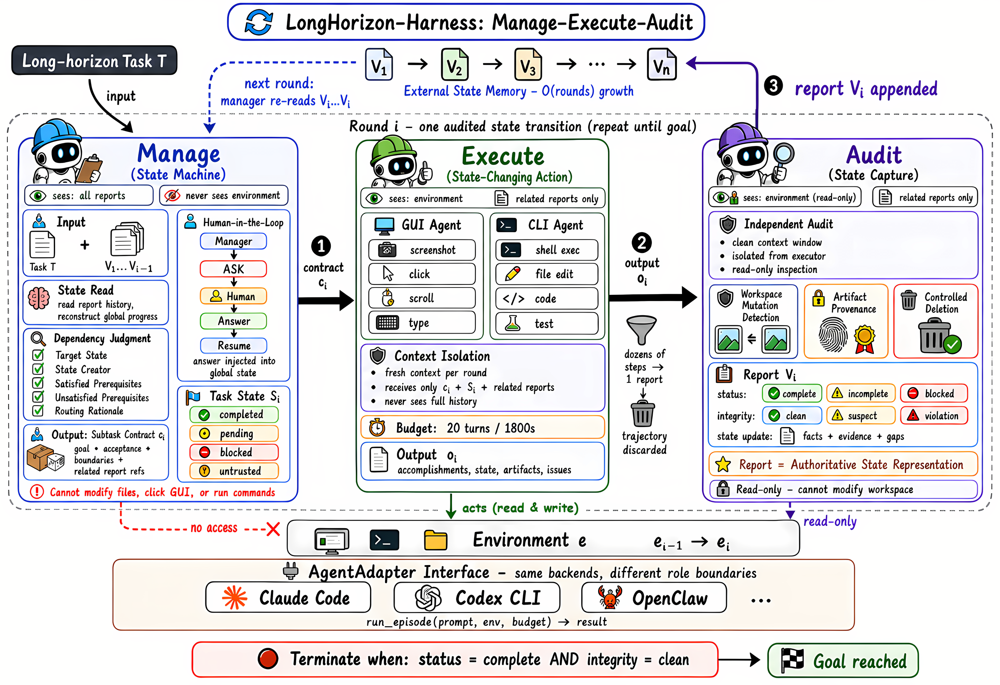

01研究背景与问题定义
论文希望解决一个长程任务中反复出现的问题：Agent 明明能完成不少局部操作，最终却因为忘记剩余要求，或过早认定某一步已经完成，没能交付整个任务。
作者认为，这与现有系统把两种职责放在执行上下文里有关。一方面，Agent 要在越来越长的工具日志和失败尝试中追踪全局进度；另一方面，它还要判断自己是否完成了要求。前者容易造成遗漏，后者则可能让一次错误自评成为后续步骤的前提。
| 问题 | 长程任务中的后果 | 本文的改动 |
|---|
| 状态埋在历史里 | 历史越来越长，已完成事项、未满足要求和依赖关系难以准确追踪 | 把全局任务状态移到执行上下文之外 |
| 执行者自行验收 | 把“看起来做完”记成事实，让后续步骤建立在错误前提上 | 由独立审计者检查环境，再确认进展 |
例如，文档标题看起来已经改好，底层样式却可能没有按要求设置。如果执行者直接宣布完成，后续计划就可能跳过这项要求。延长上下文或压缩历史可以帮助保留信息，却不能自动核实这条完成声明，因此作者引入了独立审计。
核心思路：让全局进度以外部状态保存，并用环境中的证据确认每一项进展。这样，后续子任务就能从已核实的结果继续，而不必重新梳理此前全部执行过程。
02方法与技术路线
Manager 根据当前进展逐轮定义下一个子任务，再交给 Executor 执行和 Auditor 验收。因此，每轮任务的范围取决于当前还缺什么，以及哪些前置条件已经满足。
Manager 如何划分和定义子任务
Manager 先比较原始要求与已核实的任务状态，找出剩余目标；再检查这些目标的依赖，选择当前可以推进的一项，并把本轮要做的工作写成可验收的合同。每轮审计结束后，它重新做这次判断，所以原始要求可能经过多轮子任务才完成，后续子任务也可能随着审计结果缩小范围或改变策略。
子任务的产生过程 · 由 Manager 模型逐轮判断
↓
- 找出未满足的目标
对照原始任务与当前状态，确定还有哪些要求没有完成。
- 选择现在能推进的一项
检查依赖和前置条件，决定这一轮应处理哪个目标。
- 界定本轮的工作范围
明确要改变什么，以及如何检查这项改变是否成立。
↓
存在可推进目标时，生成子任务合同 c
当前目标这一轮具体完成什么
验收条件环境达到什么状态才算完成
边界约束允许怎样做，哪些内容不能改
相关状态与证据本轮可以依赖哪些已核实事实
根据合同所需的主要环境操作，选择 GUI 或 CLI 执行者。
不派发执行的情况：目标全部满足且无完整性违规 → 完成没有许可范围内可推进的操作 → 受阻需要用户信息或授权 → 请求补充
这里的划分单位是“当前要推进的目标”，而不是固定数量的工具调用。例如，审计确认 15 个标题中只有 3 个仍不合格，下一子任务就可以只修这 3 个；全部标题通过后，下一轮再补截图。论文没有规定固定切分算法或统一粒度，具体分多大仍由 Manager 判断，执行时间预算只是本轮的运行上限。
子任务如何进入 MEA 循环
一轮处理一个子任务，Executor 内部仍可多步执行
Manage · 定义本轮任务从当前状态选择目标，生成上图中的子任务合同。
Execute · 新的执行上下文规划 → 工具操作 → 观察 → 修正 ↺
围绕本轮合同多次交互，结束后返回执行报告。
Audit · 独立核验结果只读检查环境，对照合同确认进展、完整性和缺口。
审计报告 → Manager 更新已核实进展与缺口 → 重新选择下一子任务 ↺
MEA 的独立审计发生在本轮执行结束之后，子任务内部仍运行后端原有的 Agent 循环。新上下文接收原始任务、当前状态、合同和相关审计报告，本轮的工具返回与观察继续供后续决策使用；跨轮时不再传递原始执行轨迹，但已有文件和环境改动会保留。
论文原始架构图 · 点击展开

Execute 框包含子任务内部的多步操作，上方任务状态与审计记录连接不同轮次。点击图片可查看大图。展开示例：Fresh context 连续两轮会包含什么
下面用一个文档任务展示连续两轮的输入。原始要求是：通过 LibreOffice 把 15 个章节标题设为“标题 1”样式，另存修改后的文件，保留源文件，并提供最终截图。假设首轮已经完成大部分修改，审计发现还剩 3 个标题不符合要求，Manager 就可以构造第一份输入。
以下为按论文机制构造的说明性示例，并非论文提供的原始提示词或运行日志；字段排版不代表后端的实际消息格式。
EXECUTOR INPUTROUND 02
修正剩余标题
- T · 原始任务
- 通过 LibreOffice 把 15 个章节标题设为“标题 1”样式，另存为
report_fixed.odt，保留 report.odt，并提交最终截图。
- S2 · 当前任务状态
- 修改后文件已存在，12 个标题已核验为“标题 1”样式；第 13—15 个标题仍需修正，最终截图尚未完成。
- c2 · 本轮子任务合同
- 在 LibreOffice 中修正第 13—15 个标题并保存。验收时应确认全部 15 个标题均为“标题 1”样式，正文与源文件保持不变。
- V1 · 引用的审计证据
- 审计报告 V1 中关于文件位置、标题检查结果和剩余错误的记录。
EXECUTOR INPUTROUND 03
完成截图交付
- T · 原始任务
- 通过 LibreOffice 把 15 个章节标题设为“标题 1”样式，另存为
report_fixed.odt，保留 report.odt，并提交最终截图。
- S3 · 当前任务状态
- V2 已确认全部标题样式正确，修改后的文件已保存，正文与源文件未被改动；尚缺最终截图。
- c3 · 本轮子任务合同
- 打开修改后的文档，截取能够展示最终标题样式的画面，并保存为
final.png。本轮只补齐截图，不再修改文档内容。
- V2 · 引用的审计证据
- 审计报告 V2 中关于最终文件、标题样式和文件完整性的核验记录。
第二份输入保留了“标题已经全部修正”的结论和支持它的证据，却没有带入上一轮的点击顺序、工具输出和失败尝试。新执行者仍面对同一份环境和文件，只需围绕当前缺口继续工作；它在本轮产生的新观察，则继续进入本轮自己的执行上下文。
这套结构通过 AgentAdapter 调用现有后端，保留 Claude Code、Codex 等系统原生的规划与工具循环。实验中，每轮 Executor 最多运行 1,800 秒，Manager 与 Auditor 各 300 秒，整个任务最多执行 25 轮 MEA；默认三个角色使用同一骨干模型。
03实验设计与结果分析
完成率在三个基准上都提高，但 Token 代价差异很大：WeaveBench 与 OSWorld 明显增加，Terminal-Bench 则在提高成功率的同时减少用量。
主要收益与 Token 代价 · Qwen 3.7-Plus
| 基准 | 完成率：基线 → MEA | 绝对增益 | Token 用量变化 | 统计口径 |
|---|
| WeaveBench114 个 GUI／CLI 工作流 | 51.8% → 80.7% | +28.9 个百分点 | 约 2.3 倍约增加 130% | 总 Token |
| OSWorld 2.0108 个桌面工作流 | 2.8% → 8.3% | +5.5 个百分点 | 约 3.6 倍约增加 260% | 输出 Token |
| Terminal-Bench 2.1纯命令行任务 | 69.7% → 77.2% | +7.5 个百分点 | 约 0.76 倍减少 24% | 总 Token |
WeaveBench 的主要对比使用相同模型、Claude Code 后端和权限设置。OSWorld 则比较官方单动作基线与 MEA 混合模式，因此其增益还包含交互模式等系统差异，不能全部归因于独立审计。表中的总 Token 与输出 Token 采用不同口径，也不能直接横比。
最直接的成本量级：OSWorld 平均每任务输出从 28.9K 增至 104K Token，约多 75.1K。完成率约增至三倍，输出用量约增至 3.6 倍；这组结果体现的是用更多推理换完成表现。
新增开销主要来自审计
审计者是主要的新增调用，其 Token 用量在 WeaveBench、OSWorld 和 Terminal-Bench 中分别占整个 MEA 系统的 19.4%、24.8% 和 38.1%；管理者的占比则在 2.0%—8.1% 之间。不过，这些比例描述的是系统内部如何分配用量，不能直接视为相对基线的成本增幅，因为执行者的重试和恢复次数也在变化。
同样的编排，强弱模型的成本变化相反
同一组 17 个 WeaveBench 游戏任务上，两种模型的平均得分均提高，Token 却一降一升：
同一组 17 个游戏任务的平均结果
| 骨干模型 | 平均得分：基线 → MEA | 每任务总 Token | 用量增减 |
|---|
| Claude Opus 4.7 | 0.680 → 0.809 | 16.5M → 11.1M | 约 −33% |
| Qwen 3.7-Plus | 0.524 → 0.733 | 10.7M → 34.3M | 约 +221% |
作者将这一差异解释为：较强的执行者可能用较少的审计与重规划轮次满足合同，较弱的执行者则需要反复恢复。不过，论文没有单独控制轮数来验证这一解释，因此目前能确认的是，MEA 没有固定的 Token 增幅，其总用量取决于新增管理与验收开销能否被减少的无效执行抵消。
这些实验主要报告 Token 用量，没有提供统一金额账单和完整时延对比，因此不能直接把 Token 增幅换算为费用增幅。
04贡献、局限与综合评价
论文贡献在于为已有 Agent 增加一层任务状态管理与独立验收，使局部执行的进展能够跨上下文延续，而子任务内部仍保留后端原有的执行能力。
证据边界与局限
- 各部分收益尚未完全分离：主结果表明完整 MEA 系统有效，但还缺少充分的等预算消融，来区分新上下文、外部状态、独立审计与额外推理各自带来的收益。
- 独立审计仍可能误判：执行者与审计者默认使用同一骨干模型，因此即使上下文分开，也可能有相同的认知盲点；各个子任务通过验收，也不能保证 Manager 的整体任务分解合理。
- 收益取决于任务的主要瓶颈：这种设计更适合依赖多、易遗漏且结果可核验的工作流；如果困难主要来自模型不会解题或无法正确识别图像，增加审计也无法直接补足相应能力。
综合判断：MEA 的价值在于提高局部进展最终转化为完整交付的可靠性。是否值得采用，需要同时看完成率与总用量；它并不保证省 Token。